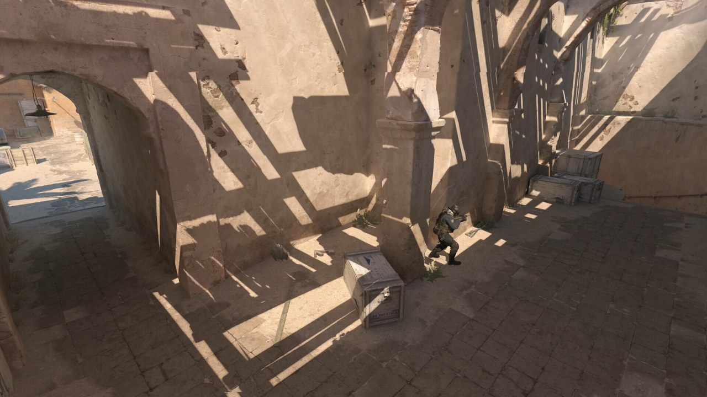
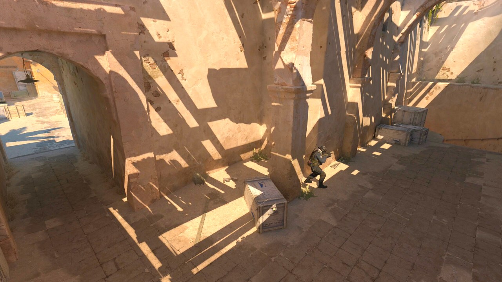
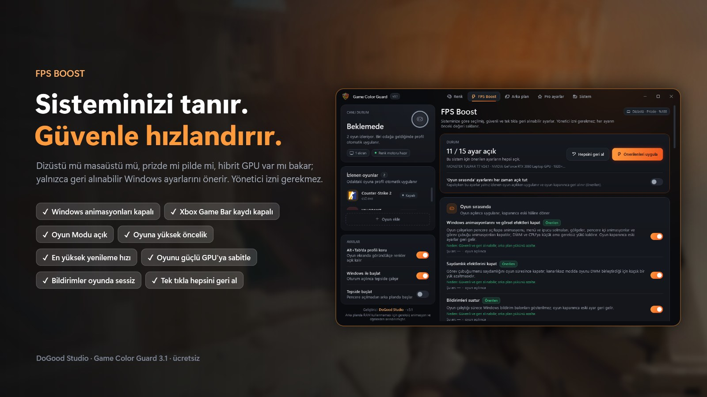
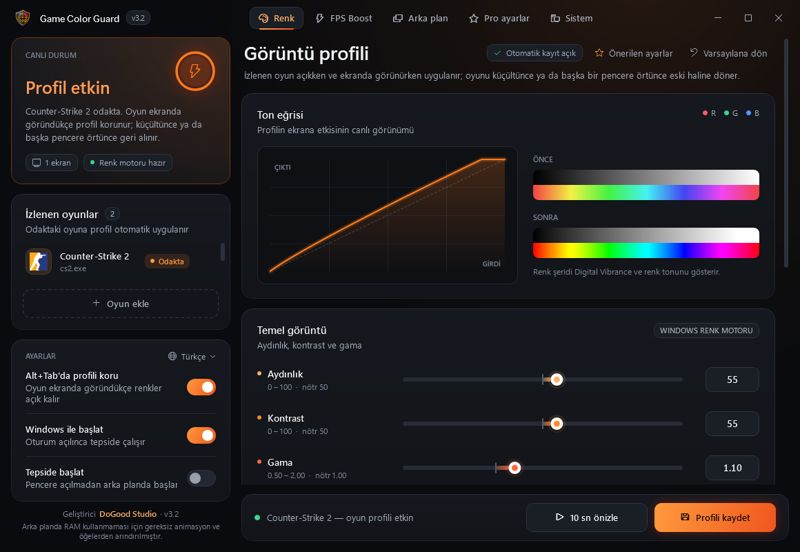
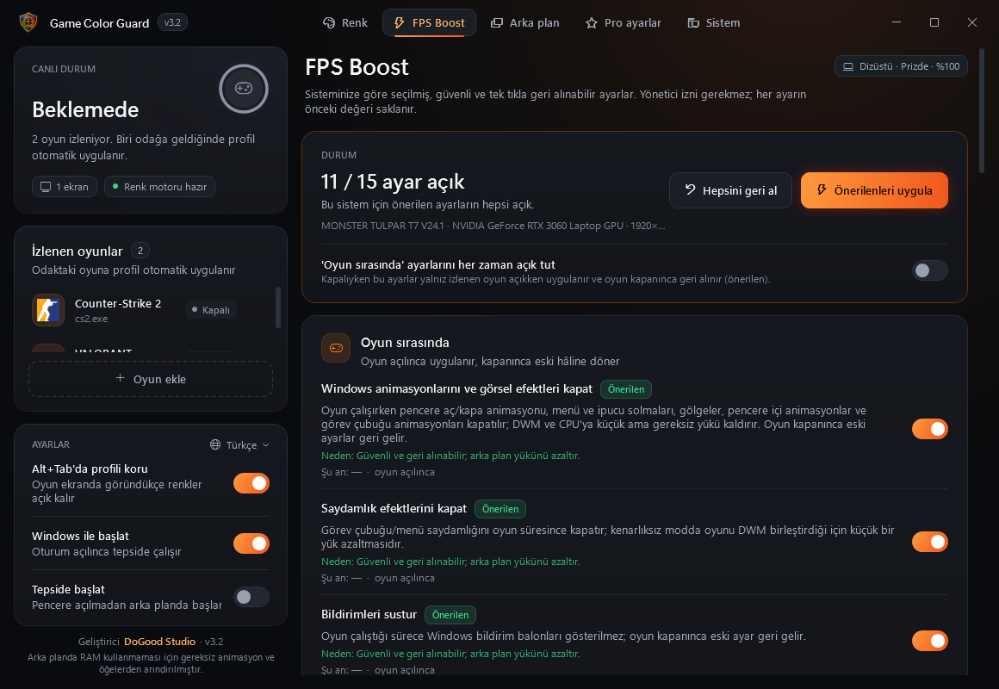
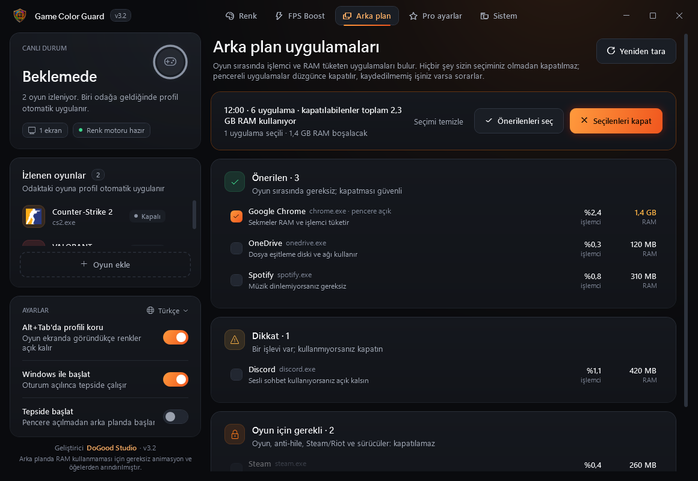
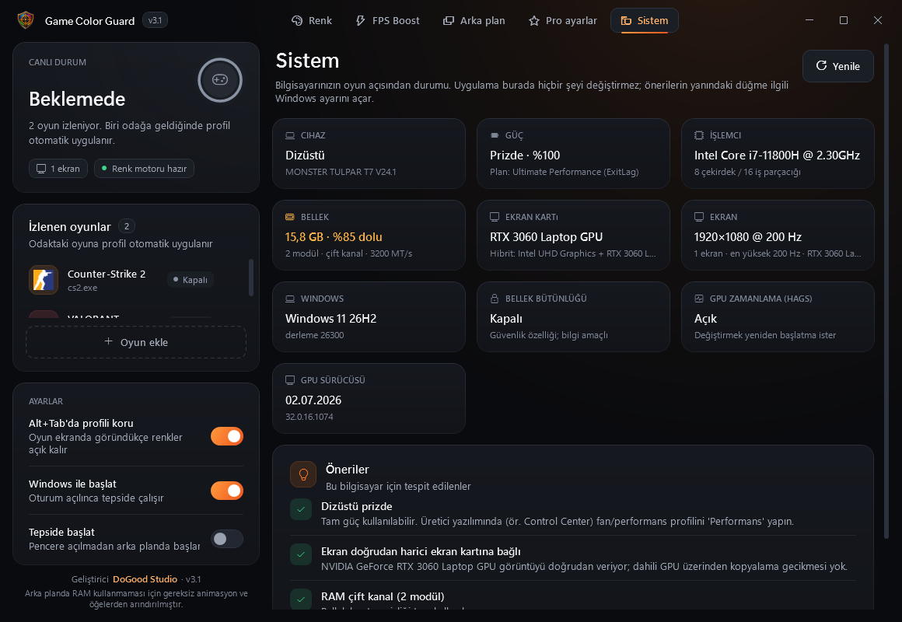

CS2 ve VALORANT İçin
Dijital Canlılık ve FPS Artırma
Düşmanları daha net görün: oyuna özel dijital canlılık (Digital Vibrance), parlaklık ve gama NVIDIA, AMD, Intel ve dizüstünde çalışır, Alt+Tab'da sıfırlanmaz. Bilgisayarınızı tanıyıp yalnızca güvenli, tek tıkla geri alınabilir ayarlar yapan FPS artırma ve 200'ü aşkın profesyonelin güncel ayarları. Ücretsiz.
Önce / Sonra
Gerçek oyun görüntüleri. Kaydırıcıyı sürükleyin: sağ taraf, uygulamanın renk hesabının (Windows renk matrisi + gama rampası) aydınlık 55, kontrast 55, gama 1,10, canlılık 85 profiliyle uygulanmış hâli. Gölgede bekleyen rakipler ve karanlık köşeler belirginleşir.


ÖnceSonraGörüntüler: Counter-Strike 2 — Valve'ın Steam mağaza görseli; VALORANT — Riot Games'in resmi VALORANT Asset Kit oyun içi görüntüsü. "Sonra" tarafı uygulamanın ekrana uyguladığı hesapla üretilmiştir; ekranınızdaki sonuç monitöre ve profile göre değişir.
FPS Boost
Bilgisayarınızı tanır, yalnızca güvenli ve tek tıkla geri alınabilen ayarları önerir.

Özellikler
Her şey tek pencerede, beş sekmede.
Her Ekran Kartında Dijital Canlılık
Aydınlık, kontrast, gama, dijital canlılık (doygunluk), renk tonu ve RGB. Windows'un renk motoruyla çalıştığı için NVIDIA, AMD ve Intel'de, hibrit grafikli dizüstülerde de çalışır. Oyun ekranda görünürken uygulanır; Alt+Tab'da sıfırlanmaz, ekran koyulaşmaz.
Güvenli FPS Artırma
Dizüstü mü masaüstü mü, prizde mi pilde mi, hibrit GPU var mı bakar; Windows animasyonları, Game DVR, Oyun Modu, güç modu, oyun önceliği, en yüksek Hz gibi ayarları önerir.
Arka Plan Temizliği
Çalışan uygulamaları işlemci ve RAM kullanımıyla listeler. Oyun, anti-hile ve sürücüler korunur; yalnız sizin seçtikleriniz kapatılır.
Pro Ayarlar
37 top takımdan 201 profesyonel (19 CS2, 18 VALORANT takımı). Takıma göre seçin, hassasiyet sizin DPI'nıza çevrilsin; CS2 config'ini tek tıkla yükleyin, VALORANT crosshair kodunu kopyalayın.
Sistem Raporu
RAM tek/çift kanal ve XMP, işlemcinin güç/ısı sınırı, oyun diski SSD mi, GPU sürücüsünün yaşı, ekran Hz, Bellek bütünlüğü. Neyin FPS'i kıstığını söyler.
Hafif
Arka planda RAM kullanmaması için gereksiz animasyon ve öğelerden arındırılmıştır. Tepsideyken yaklaşık 33 MB çalışma kümesi. Türkçe, English, Русский, العربية, Deutsch, Español ve Português dillerinde.
Ekran Görüntüleri




Bilgisayarınızı Bozmaz
Yaptıkları
- Yalnızca kullanıcı düzeyinde ayarlar; yönetici izni istemez
- Her ayarın önceki değerini saklar, tek tıkla birebir geri alır
- Windows zaten istenen durumdaysa hiçbir şeye dokunmaz
- CS2 config'ini yeni bir dosya olarak yazar, sizinkilere dokunmaz
Bilerek Yapmadıkları
- Windows hizmetlerini kapatmak, bcdedit/HPET "sihirli" ayarları
- Bellek bütünlüğünü / VBS'yi kapatmak (güvenlik özelliği)
- Oyun belleğine dokunmak (VAC, Vanguard, FACEIT için güvenli)
- Ölçülmemiş "RAM temizleyici" ve zamanlayıcı ayarları
Sık Sorulan Sorular
VAC veya Vanguard ban riski var mı?
Uygulama oyun süreçlerinin belleğine hiç dokunmaz. Renkler Windows'un kendi gama rampası ve renk matrisiyle değiştirilir; bu, NVIDIA Denetim Masası veya Windows renk filtreleriyle aynı düzeydedir.
Dijital canlılık AMD ve Intel ekran kartında çalışır mı?
Evet. Canlılık Windows renk motoruyla uygulanır, ekran kartından bağımsızdır; AMD'deki "Doygunluk" ayarının ve NVIDIA'daki "Dijital Canlılık"ın yerini tutar. Bu katman kenarlıksız (tam ekran pencereli) modda görünür, özel tam ekranda görünmez.
CS2'de düşmanlar nasıl daha net görünür?
Dijital canlılığı ve gamayı biraz artırın; oyun içinde "Oyuncu Kontrastını Artır"ı açın ve "Global Gölge Kalitesi"ni en az Orta tutun (düşükte rakip gölgelerini göremezsiniz). Program, CS2 ve VALORANT için bu oyun içi ayarların rehberini de içerir.
Dijital canlılık kaç olmalı?
Rehberlerin çoğu NVIDIA Denetim Masası'nda %60–80 öneriyor; bazı profesyoneller varsayılanda bırakıyor. Programın "Önerilen ayarlar" düğmesi aydınlık 55, kontrast 55, gama 1,10, canlılık 85 uygular (50 nötr). 10 saniyelik canlı önizlemeyle kendi monitörünüze göre ayarlayın.
Dijital canlılık FPS artırır mı?
Hayır, canlılık yalnız görüntüyü etkiler; görmenize yardım eder, oyunu hızlandırmaz. FPS kazancı ayrı FPS Boost sayfasından gelir.
CS2 ve Valorant'ta FPS nasıl arttırılır, ne kadar artar?
Sisteme göre değişir; uydurma rakam vermiyoruz. En büyük kazançlar genellikle pilden prize geçmek, tek kanal RAM'i çift kanala çıkarmak, ekranı doğru Hz'e almak ve arka plan uygulamalarını kapatmaktan gelir. Sistem sayfası sizin bilgisayarınızda bunları kontrol eder.
Ücretli mi?
Hayır, ücretsizdir. PolyForm Noncommercial lisansıyla kullanabilir, değiştirebilir ve ticari olmayan amaçlarla paylaşabilirsiniz; satılamaz.
SmartScreen uyarısı çıkıyor?
Exe dijital imzalı olmadığı için ilk açılışta çıkabilir: "Ek bilgi" › "Yine de çalıştır". Kaynak kodu GitHub'da açıktır; exe VirusTotal'da 0/68 temiz çıktı.